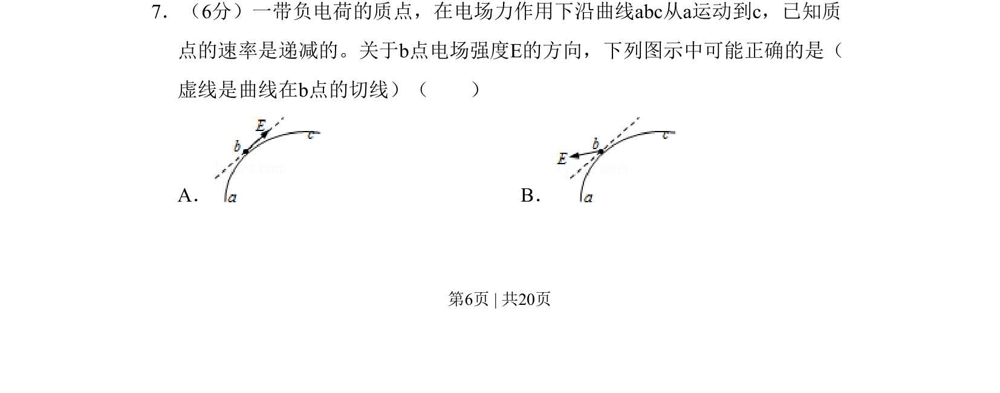
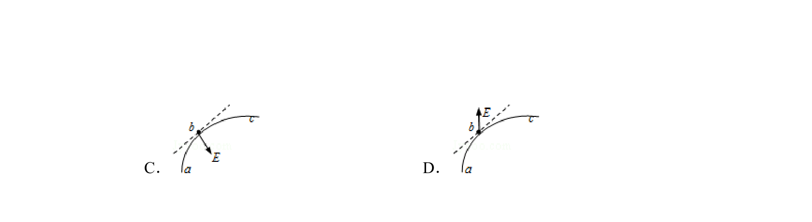
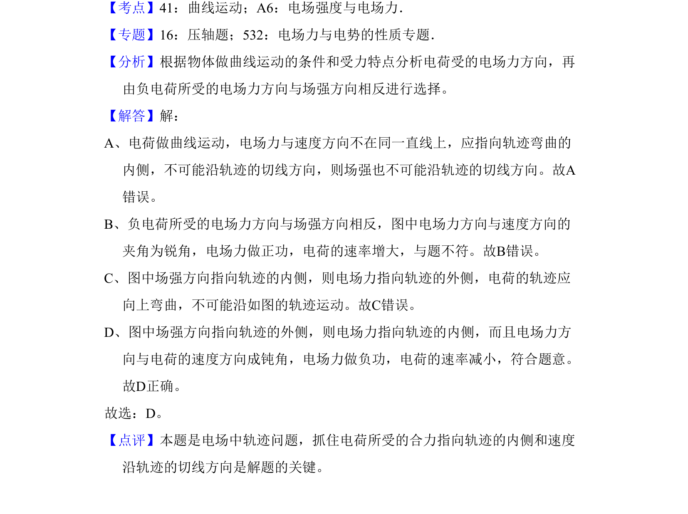

考点：曲线运动 切线方向 加速度分析 力与运动关系
曲线运动
切线方向
加速度分析
力与运动关系


一带负电质点沿曲线减速运动，根据速率递减和轨迹弯曲方向判断电场强度方向。

📄 原 PDF 第 6 页：素材/真题/吉林/2008-2024·（吉林）物理高考真题/2011年高考物理试卷（新课标）（解析卷）.pdf
素材/真题/吉林/2008-2024·（吉林）物理高考真题/2011年高考物理试卷（新课标）（解析卷）.pdf